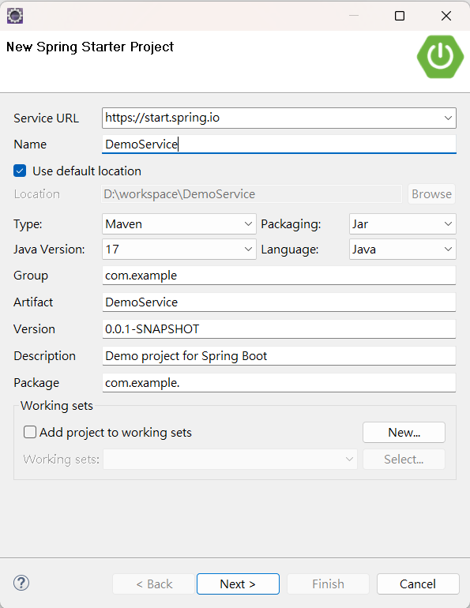
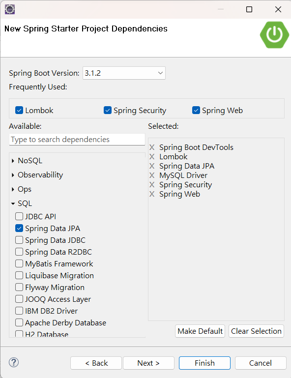
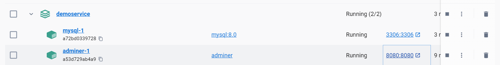
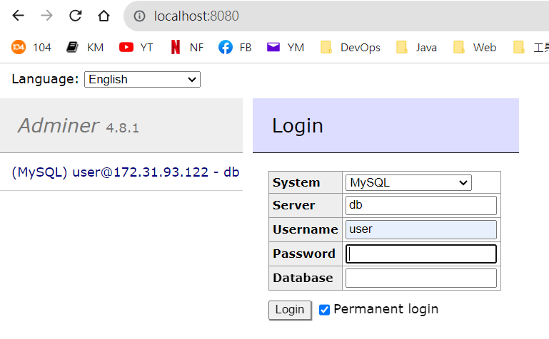
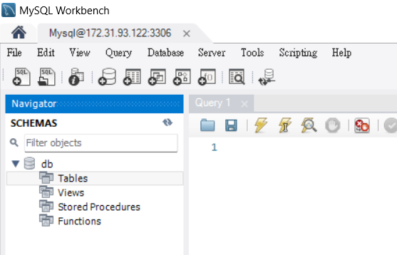
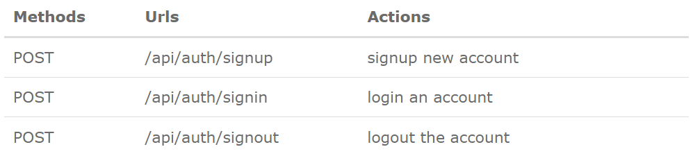
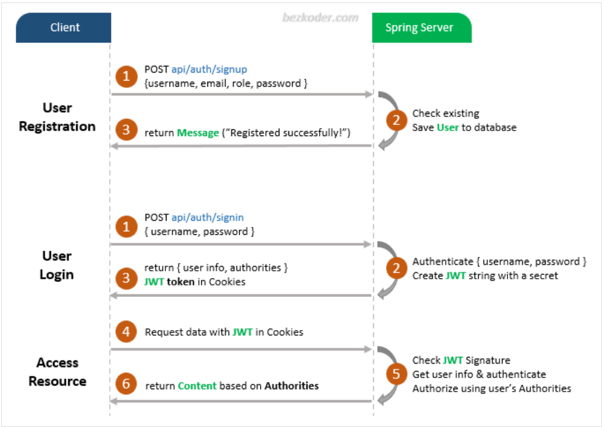
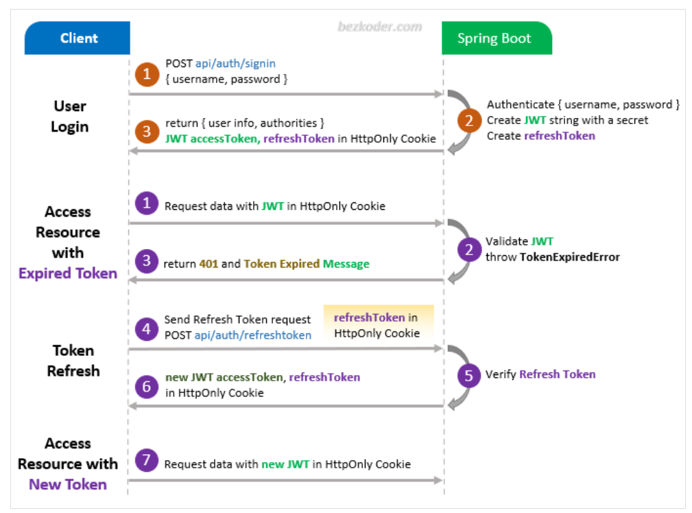
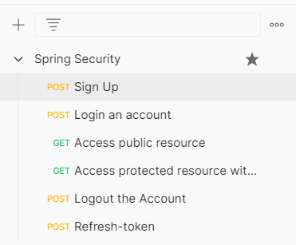

(實作)JWT Authentication and Authorization with Spring Boot 3 and Spring Security 6 + MySQL
參考資料： Bezkoder: https://www.bezkoder.com/spring-boot-security-jwt/
Aweit GitHub: https://github.com/aweit-zhu/DemoService
New Project


docker-compose.yaml 設定
version: '3.1'
services:
mysql:
image: mysql:8.0
command: --default-authentication-plugin=mysql_native_password
restart: always
environment:
MYSQL_ROOT_PASSWORD: password
MYSQL_DATABASE: db
MYSQL_USER: user
MYSQL_PASSWORD: password
ports:
- "3306:3306"
volumes:
- mysql-db:/var/lib/mysql
adminer:
image: adminer
restart: always
ports:
- 8080:8080
volumes:
mysql-db:
docker-compose up -d

開啟 http://localhost:8080/


如果不喜歡這個介面，可以改用 MySQL Workbench

application.yaml 設定
先把預設的 properties 改成 yaml 檔案

applicaion.yaml
spring:
datasource:
url: jdbc:mysql://172.31.93.122:3306/db
username: user
password: password
driver-class-name: com.mysql.cj.jdbc.Driver
jpa:
hibernate:
ddl-auto: update
show-sql: true
properties:
hibernate:
format_sql: true
database-platform: org.hibernate.dialect.MySQL8Dialect
# App Properties
bezkoder:
app:
jwtCookieName: bezkoder
jwtSecret: ======================BezKoder=Spring===========================
jwtExpirationMs: 86400000
pom.xml 設定
新增 JWT 相關套件
<dependency>
<groupId>org.springframework.boot</groupId>
<artifactId>spring-boot-starter-validation</artifactId>
</dependency>
<dependency>
<groupId>io.jsonwebtoken</groupId>
<artifactId>jjwt-api</artifactId>
<version>0.11.5</version>
</dependency>
<dependency>
<groupId>io.jsonwebtoken</groupId>
<artifactId>jjwt-impl</artifactId>
<version>0.11.5</version>
<scope>runtime</scope>
</dependency>
<dependency>
<groupId>io.jsonwebtoken</groupId>
<artifactId>jjwt-jackson</artifactId>
<version>0.11.5</version>
<scope>runtime</scope>
</dependency>
專案結構

參考程式
DemoService https://github.com/aweit-zhu/DemoService
觀念
 (https://www.bezkoder.com/spring-boot-security-jwt/)  (https://www.bezkoder.com/spring-boot-security-jwt/)
 (https://www.bezkoder.com/spring-boot-security-jwt/)
Postman 測試
請將 Spring Security.postman_collection.json 檔案，匯入至 Postman。
